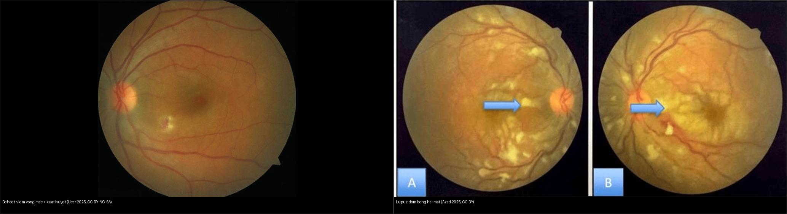
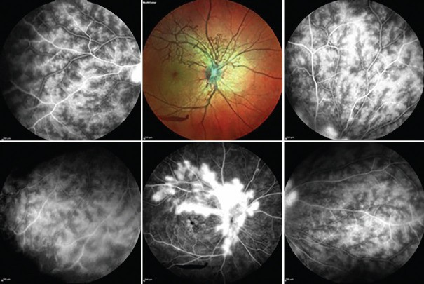
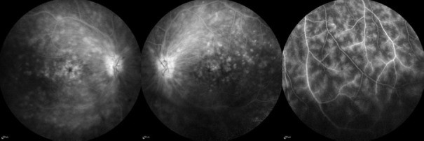
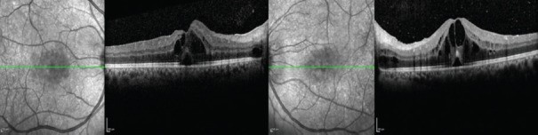
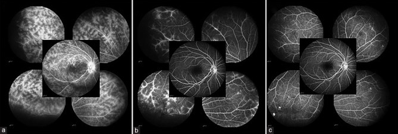
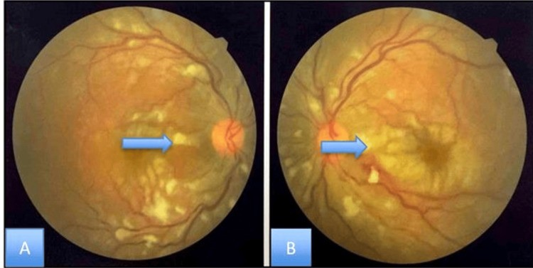
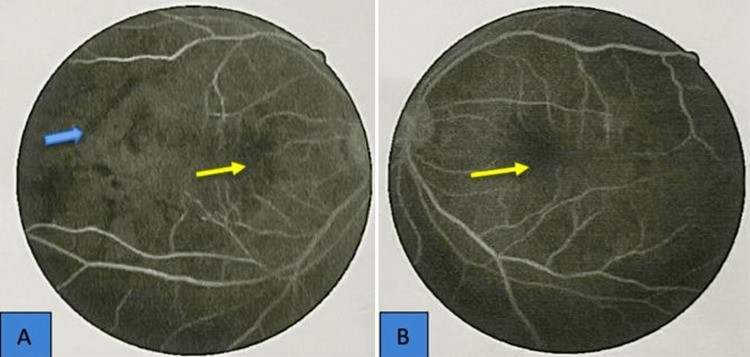
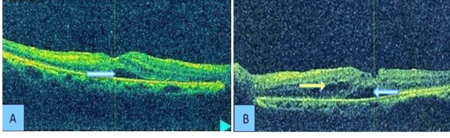
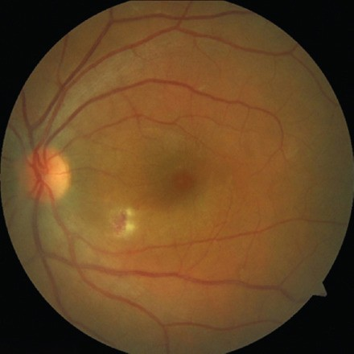
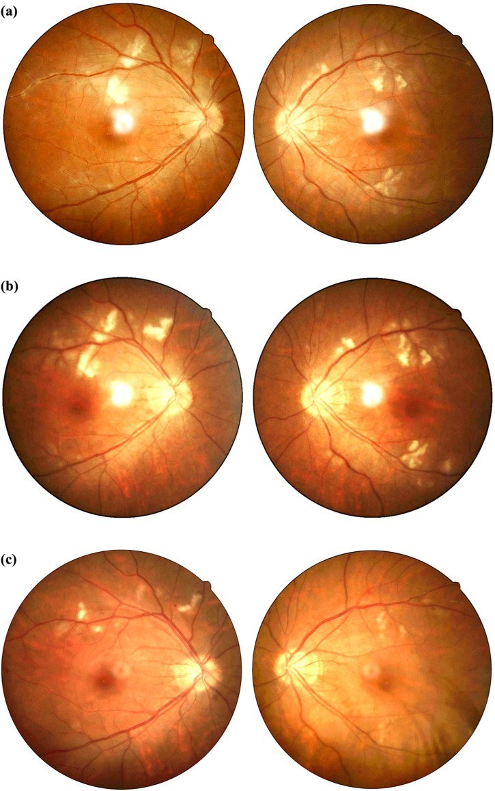

455 — Viêm mạch hệ thống khác ở mắt: Behçet & lupus / Ocular Behçet disease & lupus retinopathy — retinal vasculitis
Tags: pattern:viem-mach-vong-mac vung:vong-mac protocol:FFA protocol:OCT protocol:OCTA
Mức chắc chắn (certainty): tổng hợp y văn (literature synthesis) — nhóm tự biên từ y văn mở 2025–2026 (Saudi J Ophthalmol 2025 CC BY-NC-SA + Cureus 2025 CC BY 4.0 + Front Immunol 2025 CC BY 4.0), chưa gắn một ca nguyên văn đơn lẻ xuyên suốt.
1. Tổng quan — hai cơ chế khác nhau, cùng tạo "viêm mạch võng mạc"
- Behçet (bệnh Behçet, Behçet syndrome/BS) là viêm mạch hệ thống ảnh hưởng mọi cỡ mạch, ưu thế tĩnh mạch, cơ chế viêm tự miễn–tăng bạch cầu trung tính. Ở mắt, biểu hiện là viêm màng bồ đào không u hạt tái phát + viêm mạch võng mạc (retinal vasculitis) trên nền các đợt bùng phát xen kẽ giai đoạn lui bệnh.
- Lupus ban đỏ hệ thống (systemic lupus erythematosus, SLE) gây tổn thương mắt chủ yếu qua bệnh vi mạch do phức hợp miễn dịch — mạch máu nhỏ bị lắng đọng phức hợp miễn dịch → tắc vi mạch, thiếu máu võng mạc, dẫn tới đốm bông (cotton wool spots) và xuất huyết; thể nặng lan rộng và tắc nghẽn nhiều mao mạch gọi là bệnh võng mạc thể Purtscher (Purtscher-like retinopathy).
- TẠI SAO hai bệnh "khác" lại nhìn "giống" trên ảnh: cả hai đều đụng vào thành mạch võng mạc → trên chụp mạch huỳnh quang (fundus fluorescein angiography, FFA) thành mạch ngấm/thoát thuốc (leakage), vùng giảm tưới máu mao mạch (capillary non-perfusion) và có thể tân mạch; OCT thấy phù hoàng điểm (macular edema). Khác nhau ở dịch kính (Behçet thường có viêm dịch kính/vitritis, đục thể kính) và ở bối cảnh toàn thân (loét miệng–sinh dục/tổn thương da vs ban cánh bướm/kháng thể kháng nhân).
- Cơ chế hình ảnh chi tiết:
- FFA = tiêu chuẩn vàng đánh giá hoạt tính: thoát thuốc mao mạch lan tỏa kiểu "hình dương xỉ" (fern-like) đặc trưng của Behçet; ngấm thành mạch lớn/đĩa thị, thiếu máu vùng, phù hoàng điểm, tân mạch là các dấu khác. Vì FFA nhìn hiện tượng "rò" (leakage) nên là xét nghiệm số một để xác nhận lui bệnh trước khi giảm thuốc.
- OCT đo độ dày/độ phản quang võng mạc → phát hiện phù hoàng điểm dạng nang (CME) và các khuyết nội võng mạc do đợt viêm cũ; OCTA thấy vùng mất tưới máu mao mạch, giãn vùng không mạch trung tâm (FAZ), tổn thương đám rối sâu nhưng KHÔNG thấy leakage — nên không thay thế FFA khi cần chứng minh viêm còn hoạt động.
- Ngưỡng định lượng nằm lòng:
- Behçet: tổn thương mắt thường xuất hiện trong vòng 5 năm sau chẩn đoán BS; 10–15% ca mắt là biểu hiện ĐẦU TIÊN; loét miệng có thể vắng ở 1–10%; hai mắt (khởi phát một bên rồi lan hai bên); nam và người trẻ bệnh nặng hơn.
- Yếu tố tiên lượng xấu (Behçet mắt): nam giới, tuổi trẻ, tổn thương đoạn sau, đợt đe dọa thị lực, thị lực nền kém → cần sinh học (biologics) sớm.
- Lupus: bệnh võng mạc lupus (lupus retinopathy) là biến chứng mắt thường gặp và nặng; nhóm có LR có SLEDAI trung bình 18 vs 9 (p < 0,001) so với nhóm không LR, kèm viêm màng phổi 40% vs 20,4% (p = 0,044) và hemoglobin thấp hơn — tức LR đi cùng bệnh hoạt động mạnh.
2. Mẫu hình + chẩn đoán phân biệt theo vị trí (gamut)
Câu hỏi lọc 1 — có viêm dịch kính (vitritis) không?
- Có vitritis rõ + viêm mạch võng mạc tái phát + loét miệng/sinh dục/da → Behçet.
- Ít/không vitritis + đốm bông, xuất huyết, bệnh vi mạch ở BN SLE → bệnh võng mạc lupus.
Câu hỏi lọc 2 — vị trí và tính chất tổn thương:
- Ngoại vi, hai bên, thoát thuốc "dương xỉ" → Behçet; quanh hoàng điểm/hoàng điểm + thiếu máu tắc nghẽn lan tỏa → lupus (thể Purtscher-like).
- Đoạn sau (màng bồ đào sau/võng mạc) nặng hơn đoạn trước; hypopyon ("mủ tiền phòng") hầu như luôn đi kèm tổn thương đoạn sau — dấu hiệu báo động.
Gamut "viêm mạch võng mạc" theo nguyên nhân:
- Tự miễn–hệ thống: Behçet · lupus (SLE) · sarcoid · bệnh GPA/ANCA · viêm khớp tự phát thiếu niên kèm viêm màng bồ đào · IBD.
- TKTW–thần kinh thị: MS kèm viêm mạch võng mạc (ít gặp) · viêm mạch võng mạc liên quan nhiễm trùng (giang mai, lao, toxoplasma, CMV/ARN — xem 452).
- Bệnh mạch nội sinh (không viêm): IRVAN, Coats (một bên, xuất tiết lipid), bệnh Eales (tân mạch ngoại vi), bệnh võng mạc tăng huyết áp/thiếu máu (xem 453).
- Bắt chước (masquerade): u lympho nội nhãn (primary vitreoretinal lymphoma) — thâm nhiễm dưới biểu mô sắc tố dai dẳng, không đáp ứng kháng virus (xem 452/447).
- Cạm bẫy "giả lao mắt" ở lupus: tổn thương lupus thể hạt/chorioretinitis có thể đọc nhầm thành lao mắt hoặc toxoplasma — bối cảnh SLE + huyết thanh/xét nghiệm quyết định.
3. Bảng so sánh phân biệt (ma trận đối chiếu)
| Thực thể (entity) | Hình ảnh điển hình (đáy mắt/FFA/OCT) | Chốt vào (rule-in) | Chốt loại (rule-out) | Gợi ý xác nhận |
|---|---|---|---|---|
| Behçet | Viêm mạch võng mạc + vitritis; đáy mắt có ổ viêm võng mạc/xuất huyết; FFA: thoát thuốc "dương xỉ" lan tỏa, ngấm đĩa thị, thiếu máu; OCT: CME | Loét miệng/sinh dục tái phát + viêm mạch võng mạc hai mắt + vitritis + đáp ứng với ức chế miễn dịch | Không vitritis + đốm bông ở BN SLE → lupus | Tiêu chuẩn ISG/ICBD lâm sàng; FFA; OCT |
| Lupus — bệnh vi mạch (nhẹ) | Đốm bông (cotton wool) + xuất huyết dạng tia + ít vitritis; FFA: thiếu máu mao mạch rải rác, ngấm thành mạch | SLE hoạt động (SLEDAI cao) + đốm bông hai mắt + ANA/anti-dsDNA (+) | Viêm võng mạc đặc/ổ kèm vitritis → Behçet/nhiễm trùng | Xét nghiệm miễn dịch, đánh giá hoạt tính SLE |
| Lupus — thể tắc nghẽn (Purtscher-like) | Thiếu máu mao mạch lan tỏa, phù hoàng điểm, xuất huyết, nối thông ĐM–TM hoàng điểm, có thể xuất huyết dịch kính; thị lực giảm nặng | SLE + mất thị lực nặng hai bên + tắc nghẽn mao mạch lan tỏa trên FFA | Chấn thương/viêm tụy (Purtscher kinh điển) — nhưng ảnh giống nhau | FFA + OCT; điều trị ức chế miễn dịch tích cực |
| Sarcoid | Viêm mạch võng mạc + viêm màng bồ đào u hạt, "nến nhỏ giọt" candle-wax dripping, đĩa thị/hạch | Hạch rốn phổi hai bên + u hạt nến nhỏ giọt | Không tổn thương toàn thân → Behçet/lupus | CT ngực, ACE, sinh thiết hạch |
| U lympho nội nhãn (masquerade) | Thâm nhiễm dưới RPE dai dẳng, tế bào dịch kính, không đáp ứng kháng virus; MRI não có thể có ổ | Tổn nhiễm dưới RPE + IL-10 cao trong dịch kính | Đáp ứng tốt với ức chế miễn dịch/kháng virus → không phải lymphoma | Sinh thiết dịch kính (cytokine/IL-10, MYD88) |

Trái: Behçet — ổ viêm võng mạc kèm xuất huyết (viêm mạch võng mạc). Phải: lupus SLE — nhiều đốm bông (cotton wool) ở cả hai mắt, dấu hiệu bệnh vi mạch. Nguồn: Ucar D, Esatoglu SN, Saudi J Ophthalmol 2025 (PMC11964342), CC BY-NC-SA 4.0 (trái); Azad MAK et al., Cureus 2025 (PMC12373494), CC BY 4.0 (phải). Ảnh ghép letterbox.Quiz composite: Cùng là "viêm mạch võng mạc" nhưng hai chân dung. Bên nào gợi ý Behçet, bên nào gợi ý lupus — và dấu hiệu nào tách hai bên về mặt hình ảnh?
Bấm để hiện đáp án
- Trái = Behçet: ổ viêm võng mạc + xuất huyết kèm nổi bật viêm dịch kính; trên FFA là thoát thuốc "dương xỉ" lan tỏa.
- Phải = lupus: đốm bông hai mắt (vi mạch tắc nghẽn) với ít viêm dịch kính.
- Chốt phân biệt hình ảnh: mức viêm dịch kính + kiểu thoát thuốc trên FFA; chốt lâm sàng: loét miệng/sinh dục & tổn thương da (Behçet) vs ban/kháng thể ANA–anti-dsDNA (SLE).
4. Protocol chụp–chẩn đoán + theo dõi + xử trí
Protocol hình ảnh ở BN nghi viêm mạch võng mạc (Behçet/lupus):
- FFA (đường đầu tiên, tiêu chuẩn vàng): chụp góc rộng, hai mắt, ghi các thì; tìm thoát thuốc mao mạch ("dương xỉ"), ngấm thành mạch/đĩa thị, thiếu máu mao mạch, phù hoàng điểm, tân mạch. FFA dùng để xác nhận hoạt tính, đánh giá đáp ứng, và chứng minh lui bệnh trước khi giảm/ngừng thuốc.
- OCT (theo dõi cấu trúc): phát hiện và theo dõi phù hoàng điểm dạng nang (CME) và tổn thương cấu trúc do đợt viêm cũ; OCTA đánh giá hiện tượng mất tưới máu mao mạch/FAZ nhưng không thấy leakage ⇒ không thay FFA khi cần chứng minh viêm hoạt động.
- Đánh giá toàn thân song song: Behçet — tiêu chuẩn lâm sàng (loét miệng/sinh dục, tổn thương da, viêm mạch máu lớn/TKTW); lupus — ANA/anti-dsDNA, bổ thể, SLEDAI, đánh giá thận/TKTW.
- Chẩn đoán phân biệt bằng xét nghiệm/mô bệnh khi cần: huyết thanh/Mantoux/nội soi phế quản (lao/sarcoid), huyết thanh giang mai, sinh thiết dịch kính (loại trừ lymphoma masquerade).
Điều trị & theo dõi (khung):
- Behçet viêm đoạn sau: glucocorticoid + ức chế miễn dịch; azathioprine 2–2,5 mg/kg (khởi hiệu sau ~3 tháng nên phải dùng kèm corticoid ban đầu) và/hoặc cyclosporine; sinh học (kháng TNF-α như infliximab/adalimumab, interferon-alpha, tocilizumab; JAK inhibitor là lựa chọn mới) — ưu tiên sớm ở nam, người trẻ, tổn thương đoạn sau/đe dọa thị lực. Giảm corticoid về ≤ 10 mg trong 3 tháng để giảm tác dụng phụ; không có đồng thuận rõ về khi nào ngừng hẳn → theo dõi FFA.
- Lupus: kiểm soát hoạt tính SLE là gốc; methylprednisolone TM rồi prednisolone uống 1 mg/kg/ngày; kèm ức chế miễn dịch (cyclophosphamide/tháng, mycophenolate, hoặc rituximab — đặc biệt khi kèm viêm thần kinh thị); hydroxychloroquine nền tảng; điều trị bệnh võng mạc tắc nghẽn nặng phối hợp chuyên khoa.
- Theo dõi dài hạn: cả hai bệnh tái phát đợt ⇒ cần FFA định kỳ + OCT; sàng lọc tổn thương toàn thân (thần kinh, mạch máu lớn, thận) và các biến chứng mắt (tân mạch, phù hoàng điểm, teo thần kinh thị).
flowchart TD
A[Viem mach vong mac tren lam sang] --> B{Viem dich kinh/vitritis ro?}
B -->|Co + loet mieng-sinh duc/da| C[Nghi Behcet: FFA tim thoat thuoc duong xi]
B -->|It/khong + dot bong o BN SLE| D[Nghi benh vong mac lupus]
C --> E{Doan sau / nam tre / nguy co thap thi luc?}
E -->|Co| F[Sinh hoc som: anti-TNF/interferon + AZA/CsA + corticoid]
E -->|Khong| G[AZA/CsA + corticoid, giam <=10 mg trong 3 thang]
D --> H{Muc do tac nghen - thi luc}
H -->|Viem mach nhe - dot bong| I[Kiem soat hoat tinh SLE + hydroxychloroquine +/- uc che mien dich]
H -->|Tac nghen lan toa Purtscher-like| J[Methylprednisolone TM -> prednisolone 1 mg/kg + cyclophosphamide/MMF/rituximab]
F --> K[FFA dinh ky: chung minh lui benh truoc khi giam thuoc]
G --> K
J --> K




Hàng 1: Behçet — ảnh multicolor + FFA cho thấy tân mạch đĩa thị do viêm dai dẳng, kèm thoát thuốc lan tỏa (Fig. 1, PMC12685267) và thoát thuốc mao mạch kiểu "dương xỉ" + ngấm đĩa thị (Fig. 2, PMC11964342). Hàng 2: OCT phù hoàng điểm hai bên (Fig. 3, PMC11964342) và FFA trước và sau 3 tháng điều trị — thoát thuốc/ngấm đĩa thị giảm rõ (Fig. 4, PMC12685267). Nguồn: Ucar D & Esatoglu SN; Eser-Ozturk H & Tugal-Tutkun I, Saudi J Ophthalmol 2025, CC BY-NC-SA 4.0.


SLE: đốm bông (cotton wool) hai mắt (Fig. 6), FFA viêm mạch võng mạc với vùng thiếu máu hoàng điểm (Fig. 3), OCT phù hoàng điểm dạng nang + dịch dưới võng mạc (Fig. 4). Nguồn: Azad MAK et al., Cureus 2025 (PMC12373494), CC BY 4.0.5. Biến thể bình thường và cạm bẫy
- Behçet có thể "yên lặng" giữa các đợt: mắt có thể không còn dấu hiệu viêm lâm sàng nhưng FFA vẫn còn thoát thuốc dưới lâm sàng ⇒ FFA bắt buộc trước khi giảm/ngừng thuốc; đừng tin "mắt sạch" bằng soi đáy mắt đơn thuần.
- OCTA KHÔNG thay FFA: OCTA thấy mất tưới máu/FAZ nhưng không thấy leakage — dùng OCTA để "loại trừ viêm hoạt động" là sai.
- Đốm bông ở lupus giống nhiều bệnh: tăng huyết áp, thiếu máu, nhiễm trùng, Purtscher do chấn thương/viêm tụy — đốm bông không đặc hiệu cho lupus, phải đặt trong bối cảnh SLE hoạt động.
- Lupus giả lao mắt / giả toxoplasma: tổn thương lupus dạng hạt hoặc chorioretinitis có thể bị đọc nhầm thành lao mắt hoặc toxoplasma (đã có ca lupus retinopathy giả lao mắt) ⇒ tránh điều trị kháng lao oan; dựa vào miễn dịch–bối cảnh và đáp ứng điều trị.
- "Hypopyon" không phải luôn là bệnh riêng của Behçet: mủ tiền phòng gặp cả trong viêm nội nhãn nhiễm trùng/masquerade — nhưng trong bệnh cảnh Behçet, hypopyon hầu như luôn kèm tổn thương đoạn sau, cần soi đáy mắt/FFA ngay.
- Điều trị chỉ bằng corticoid là bẫy: Behçet/lupus tái phát — corticoid đơn thuần không duy trì lui bệnh; cần ức chế miễn dịch/sinh học nền và giảm corticoid sớm.
- Cạm bẫy trung thực nguồn: các con số dịch tễ (tần suất lupus retinopathy, thời điểm xuất hiện) khác nhau giữa các nghiên cứu; bài này ghi rõ nguồn từng số và các số chưa kiểm chứng để "chưa rõ".
6. Tự lượng giá — Blind Quiz
Ca 1 — Nam 28 tuổi, loét miệng tái phát và loét sinh dục, đau mắt đỏ từng đợt, nay nhìn mờ. Đáy mắt:

- Hỏi: mô tả tổn thương? Bệnh hệ thống nào nghĩ đến đầu tiên? Xét nghiệm hình ảnh nào cần làm để đánh giá hoạt tính?
Bấm để hiện đáp án (findings + chẩn đoán)
- Dấu hiệu (findings): viêm võng mạc có xuất huyết (retinitis with hemorrhage) kèm viêm dịch kính.
- Chẩn đoán (diagnosis): Behçet — gợi ý bởi loét miệng + loét sinh dục tái phát + viêm mạch võng mạc; nguy cơ nặng hơn ở nam trẻ.
- Cần làm: FFA (đánh giá hoạt tính, tìm thoát thuốc "dương xỉ"/thiếu máu/ngấm đĩa thị) + OCT (phù hoàng điểm); khởi ức chế miễn dịch nền, cân nhắc sinh học sớm.
- Nguồn ảnh: Ucar D & Esatoglu SN, Saudi J Ophthalmol 2025 (PMC11964342) Fig. 1, CC BY-NC-SA 4.0.
Ca 2 — Cùng bệnh nhân Behçet, FFA dưới đây:
- Hỏi: gọi tên kiểu thoát thuốc đặc trưng? Các dấu FFA khác có thể gặp? Vì sao FFA quan trọng trước khi giảm thuốc?
Bấm để hiện đáp án (findings + chẩn đoán)
- Dấu hiệu (findings): thoát thuốc mao mạch lan tỏa kiểu "dương xỉ" (fern-like); ngấm đĩa thị và ngấm thành mạch lớn; có thể kèm thiếu máu, phù hoàng điểm, tân mạch.
- Ý nghĩa: đây là dấu đặc trưng của Behçet uveitis; vì mắt có thể yên lặng về lâm sàng giữa các đợt, FFA xác nhận lui bệnh (hết leakage) trước khi giảm/ngừng ức chế miễn dịch.
- Nguồn ảnh: Ucar D & Esatoglu SN (PMC11964342) Fig. 2, CC BY-NC-SA 4.0.
Ca 3 — Behçet, FFA của một mắt trước và sau 3 tháng điều trị:
- Hỏi: so sánh hai thì? Điều này dạy gì về "thời điểm giảm thuốc"?
Bấm để hiện đáp án (findings + chẩn đoán)
- Dấu hiệu (findings): trước điều trị — thoát thuốc mao mạch lan tỏa + ngấm đĩa thị; sau 3 tháng — giảm rõ thoát thuốc và ngấm đĩa thị.
- Ý nghĩa: FFA là công cụ theo dõi đáp ứng và chứng minh lui bệnh; chỉ giảm ức chế miễn dịch khi FFA hết leakage, không chỉ khi hết triệu chứng.
- Nguồn ảnh: Eser-Ozturk H & Tugal-Tutkun I, Saudi J Ophthalmol 2025 (PMC12685267) Fig. 4, CC BY-NC-SA 4.0.
Ca 4 — Nữ 26 tuổi SLE, giảm thị lực tiến triển. Đáy mắt:

- Hỏi: dấu hiệu? Nghĩ bệnh võng mạc lupus hay viêm mạch Behçet? Vì sao cần soi toàn thân?
Bấm để hiện đáp án (findings + chẩn đoán)
- Dấu hiệu (findings): phù đĩa thị + tổn thương võng mạc hai bên (đốm bông/xuất huyết); ca này kèm viêm thần kinh thị hai bên.
- Chẩn đoán (diagnosis): viêm mạch võng mạc + viêm thần kinh thị trong SLE — nghĩ lupus hơn Behçet vì có viêm thần kinh thị + SLE mới chẩn đoán, ít viêm dịch kính; điều trị methylprednisolone + rituximab.
- Lưu ý: lupus thể này có thể giả lao mắt/toxoplasma; đánh giá miễn dịch–toàn thân để tránh điều trị oan.
- Nguồn ảnh: Jin D et al., Front Immunol 2025 (PMC12399518) Fig. 1, CC BY 4.0.
Ca 5 — Một bệnh nhân SLE khác: FFA và OCT dưới đây:
- Hỏi: gọi tên tổn thương? Cơ chế tắc nghẽn mao mạch? Điều trị nền tảng?
Bấm để hiện đáp án (findings + chẩn đoán)
- Dấu hiệu (findings): FFA — thoát thuốc thành mạch + vùng thiếu máu mao mạch quanh hoàng điểm; OCT — phù hoàng điểm dạng nang + dịch dưới võng mạc.
- Cơ chế: lắng đọng phức hợp miễn dịch ở mạch máu nhỏ → tắc vi mạch → thiếu máu → thoát dịch; đốm bông là nhồi máu sợi trục (khoảng chất trắng sợi võng mạc).
- Điều trị: kiểm soát hoạt tính SLE (hydroxychloroquine nền + glucocorticoid + ức chế miễn dịch); các ca này methylprednisolone TM rồi prednisolone 1 mg/kg + cyclophosphamide/tháng.
- Nguồn ảnh: Azad MAK et al., Cureus 2025 (PMC12373494) Fig. 3, 4, CC BY 4.0.
Bài liên quan chéo
- 400 – Tổng quan Mắt & thị giác
- 446 – Phù hoàng điểm viêm vs DME (CME do viêm — quyết định steroid vs anti-VEGF)
- 447 – Hội chứng đốm trắng võng mạc (viêm võng mạc–hắc mạc, DDx viêm màng bồ đào)
- 451 – Biểu hiện mắt của bệnh hệ thống (sarcoid, GPA, IgG4, lymphoma — masquerade)
- 452 – Hoại tử võng mạc cấp (ARN) & CMV (viêm võng mạc nhiễm trùng — DDx quan trọng)
- 453 – Bệnh võng mạc tăng huyết áp & thiếu máu (đốm bông không đặc hiệu cho lupus)
Ảnh
455_behcet-retinitis_Fundus_PMC11964342-Fig1-CCBYNCSA.jpg,455_behcet-ffa-leakage_FFA_PMC11964342-Fig2-CCBYNCSA.jpg,455_behcet-oct-macular-edema_OCT_PMC11964342-Fig3-CCBYNCSA.jpg— Ucar D, Esatoglu SN, Saudi J Ophthalmol 2025 (PMCID: PMC11964342), CC BY-NC-SA 4.0.455_behcet-disc-neovascularization_PMC12685267-Fig1-CCBYNCSA.jpg,455_behcet-ffa-truoc-sau_FFA_PMC12685267-Fig4-CCBYNCSA.jpg— Eser-Ozturk H, Tugal-Tutkun I, Saudi J Ophthalmol 2025 (PMCID: PMC12685267), CC BY-NC-SA 4.0.455_lupus-cotton-wool_Fundus_PMC12373494-Fig6-CCBY.jpg,455_lupus-ffa-vasculitis_FFA_PMC12373494-Fig3-CCBY.jpg,455_lupus-oct-macular-edema_OCT_PMC12373494-Fig4-CCBY.jpg— Azad MAK et al., Cureus 2025 (PMCID: PMC12373494), CC BY 4.0.455_lupus-retinal-vasculitis_PMC12399518-Fig1-CCBY.jpg— Jin D et al., Front Immunol 2025 (PMCID: PMC12399518), CC BY 4.0.composite_behcet-vs-lupus.jpg— ghép 2 ảnh (Fig. 1 PMC11964342 và Fig. 6 PMC12373494) bằngtools/make_composite.py.- Chi tiết giấy phép từng ảnh trong
images/CREDITS.md. AuntMinnie: chỉ dẫn link, không tải.
Không dùng để chẩn đoán độc lập khi chưa có người hướng dẫn.